Silverstone - Aerial Photo's
|| Panoramic Photos, Aug 04 | Aerial Photos, May 05 ||
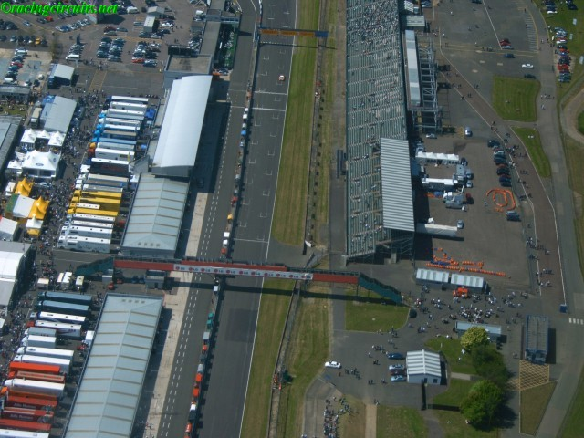
Start/Finish straight & pitlane
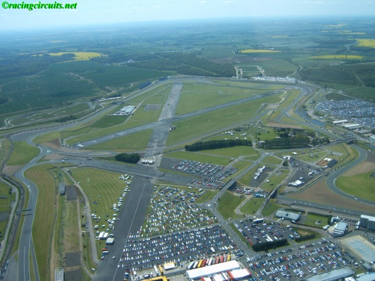
View south from Copse
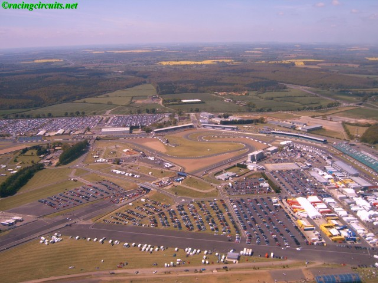
The paddock
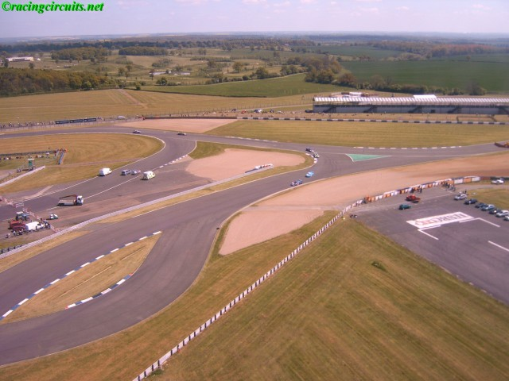
Maggots / Becketts / Ireland Section
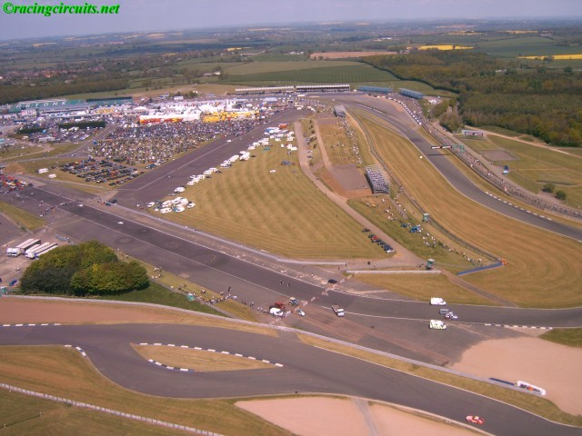
Looking towards the paddock from Becketts
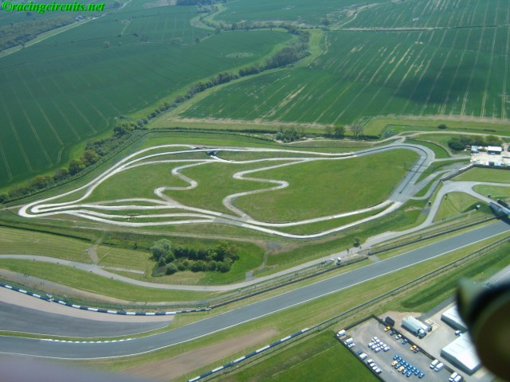
Roger Clark Rallycross Track
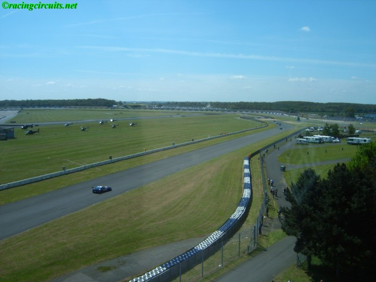
Tower Straight heading down to Abbey on the international circuit
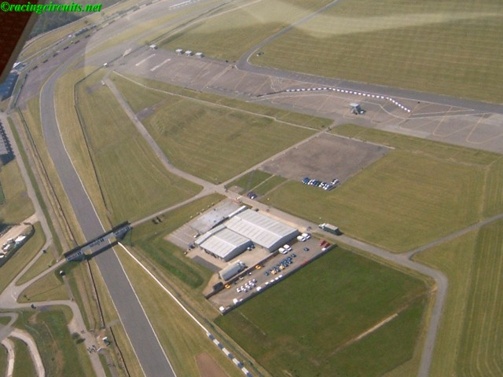
Hanger Straight, looking towards Stowe
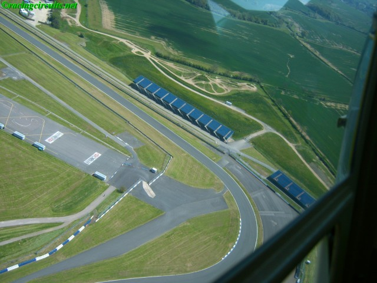
Stowe corner
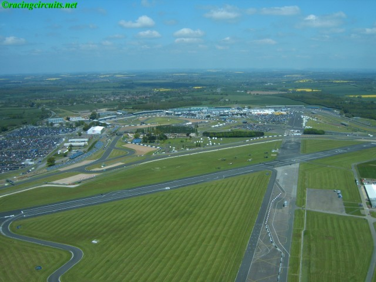
View North-West from Stowe
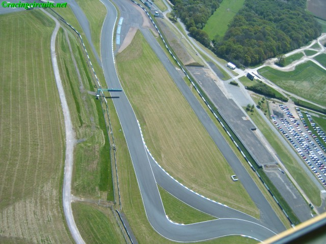
The Vale
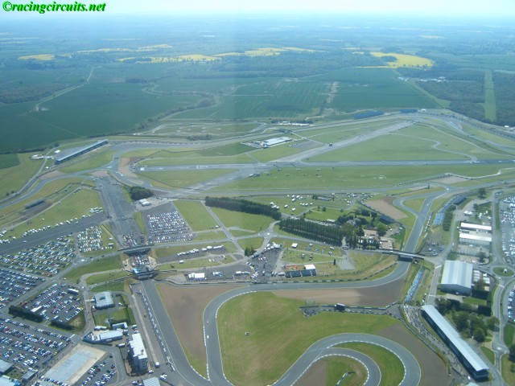
View South-East from the Start/Finish line
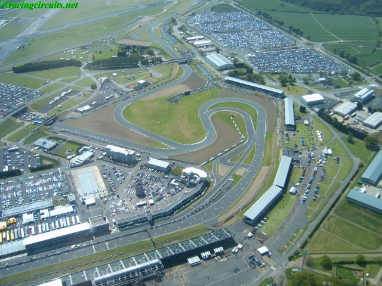
Priory / Brooklands / Luffield / Woodcote section
Photographs Taken: 15 May 2005
Return to racingcircuits.net's Photo Archive Main Index
©2005 racingcircuits.net. All rights reserved. Photography by Richard King.